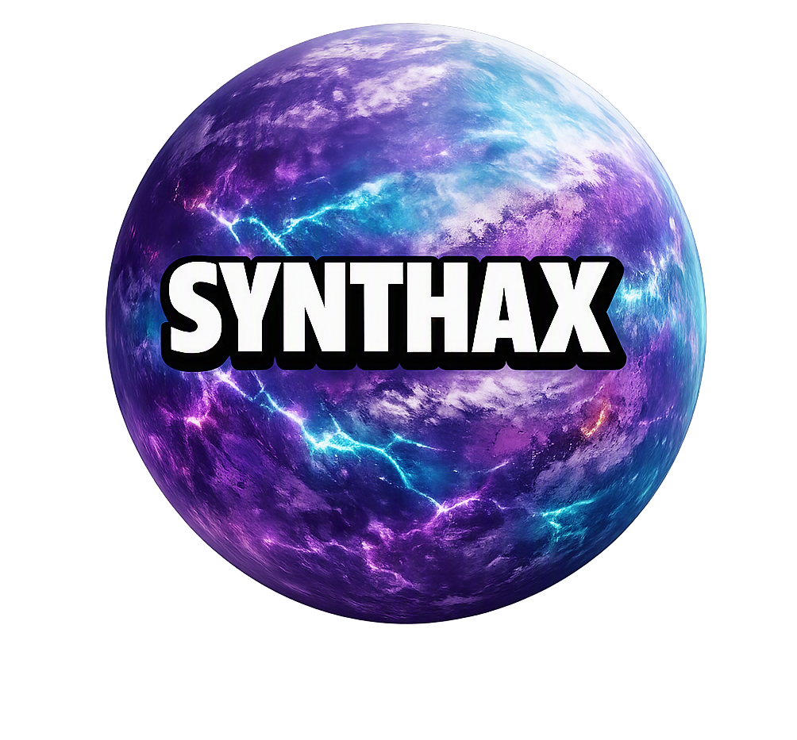
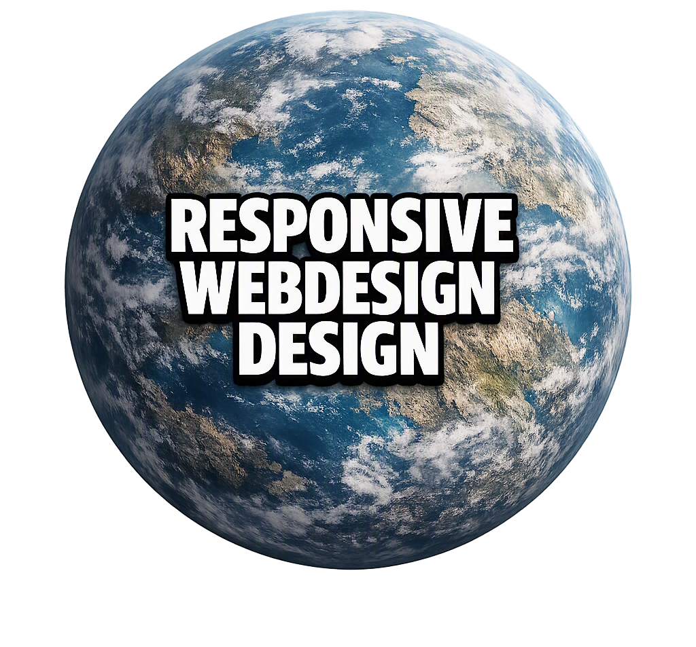
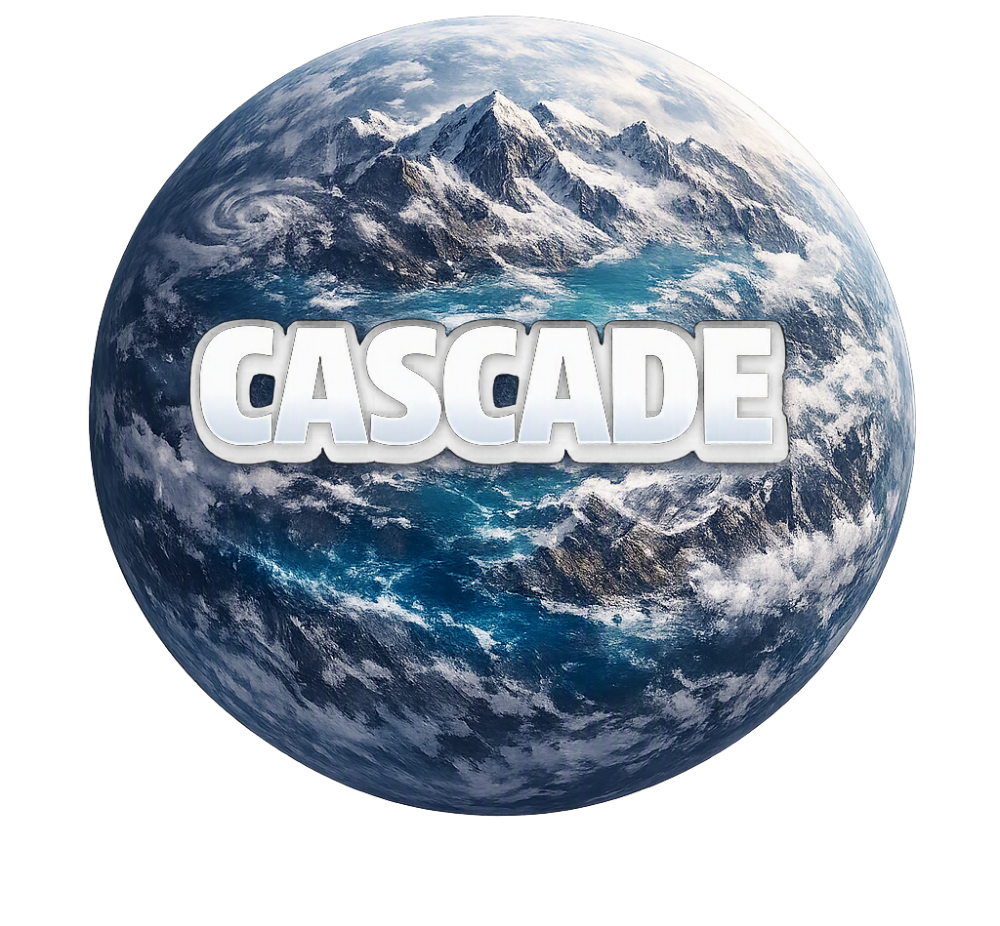
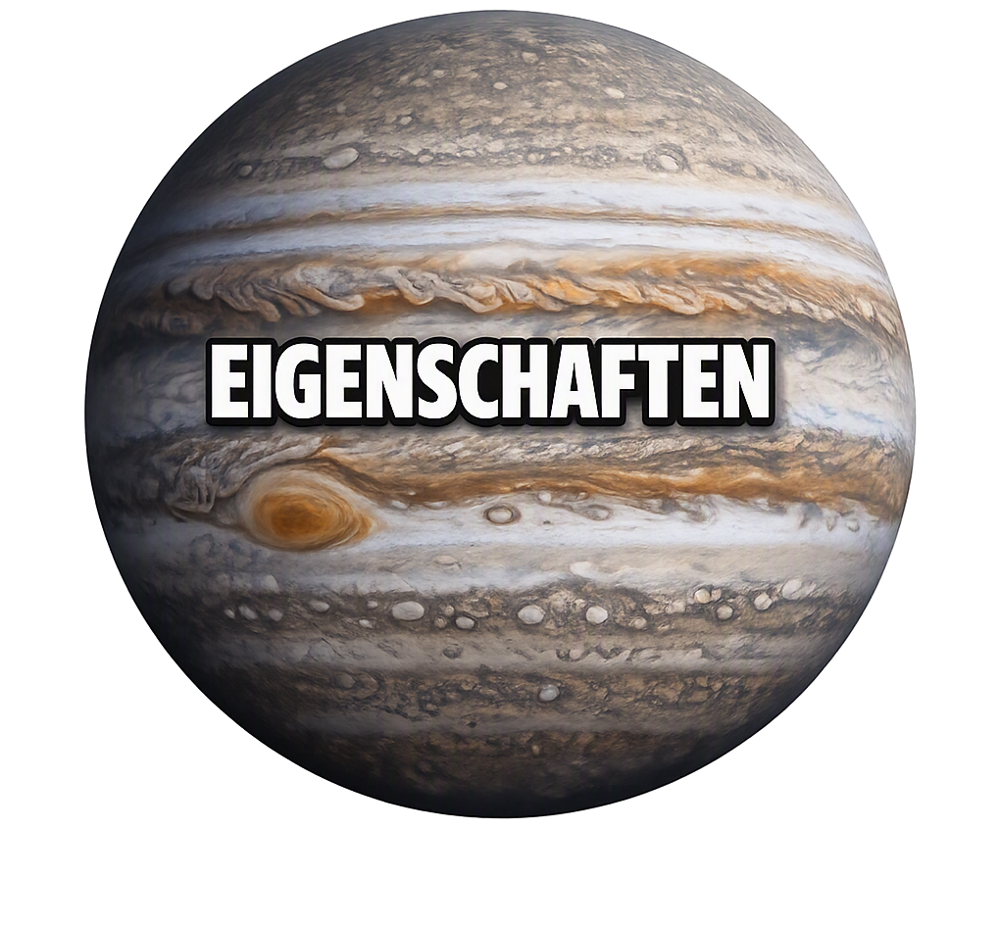
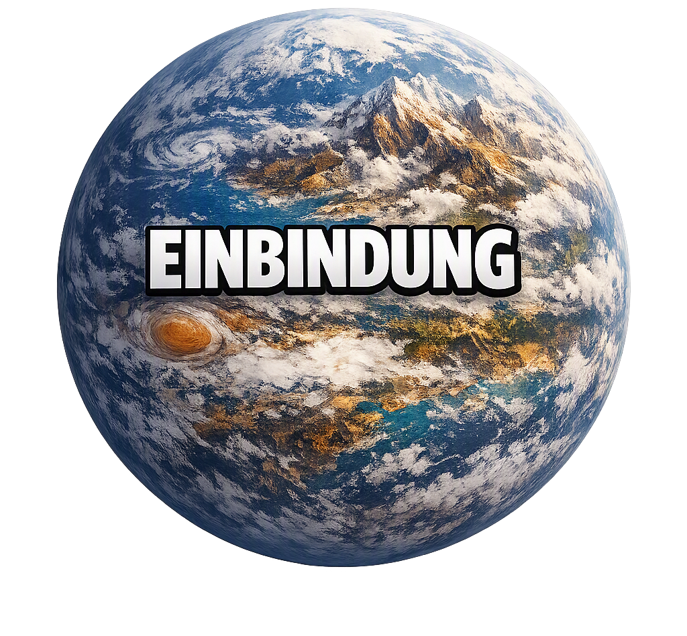
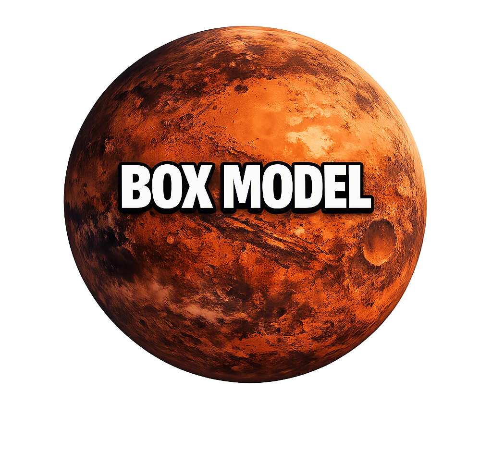
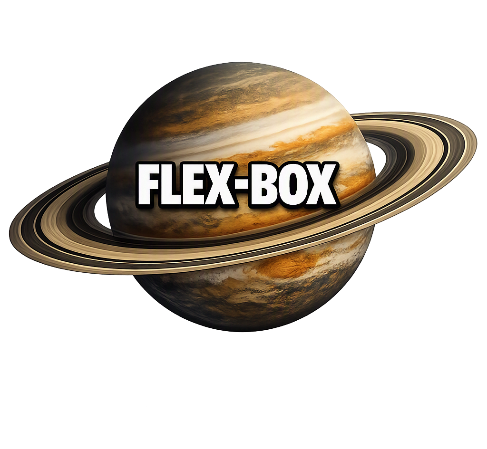
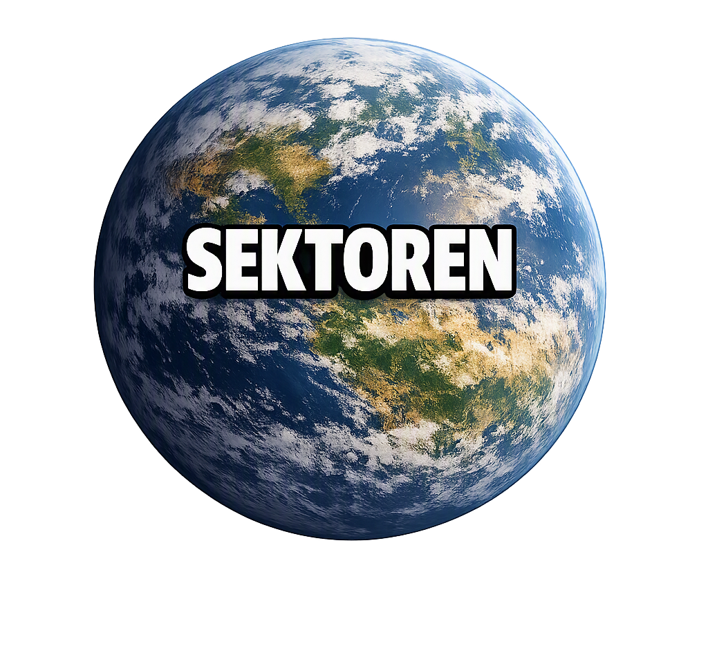

Andromeda ist unsere CSS-Galaxie. Sie steht für die Gestaltung und das Aussehen von Webseiten.
Mit CSS können Webseiten zum Beispiel Farben, Schriftarten, Größen, Abstände und Hintergründe bekommen. Dadurch wird festgelegt, wie die Inhalte einer HTML-Seite dargestellt werden.
Der Name „CSS“ steht für „Cascading Style Sheets“. CSS wurde entwickelt, um die Gestaltung von Webseiten von ihrer eigentlichen Struktur zu trennen.
CSS besteht aus Regeln, die festlegen, welche HTML-Elemente gestaltet werden und wie diese aussehen sollen. Dabei spielen unter anderem Selektoren, Eigenschaften und Werte eine wichtige Rolle.
CSS bietet viele Möglichkeiten, Webseiten übersichtlich und ansprechend zu gestalten. Dazu gehören unter anderem das Box Model, Flexbox und Responsive Web Design.
Unsere Gestaltung im Web-Universum
Galaxie:Andromeda
Typ:Spiralgalaxy
Enthält:Cascading Style Sheets
Nachbargalaxie:Milchstraße
Die Andromedagalaxie bildet in unserem Web-Universum die CSS-Galaxie. Von ihr aus führen die Verbindungen zu den verschiedenen CSS-Planeten.







